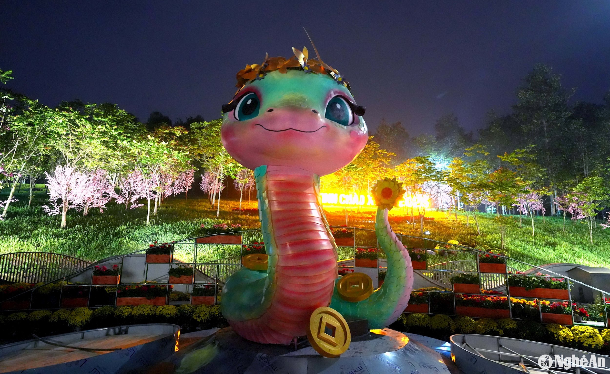
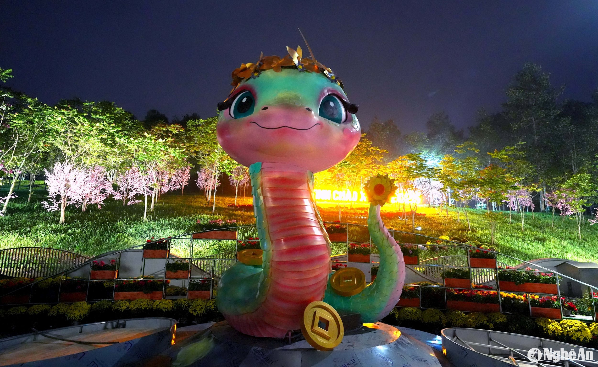

Truyện Ngắn: Bức Thư Mùa Xuân
Trong những ngày cuối năm, An ngồi trước bàn, cầm bút viết lá thư đầu tiên cho cha mình - người đã xa nhà từ rất lâu. Lá thư không chỉ là những dòng chữ mà còn chứa đựng sự nhớ nhung, lòng kính yêu và hy vọng được đoàn tụ. Mùa xuân năm ấy, khi cha An bất ngờ trở về, họ đã cùng nhau gói bánh chưng, làm nên một mùa Tết ấm áp không bao giờ quên.
 
